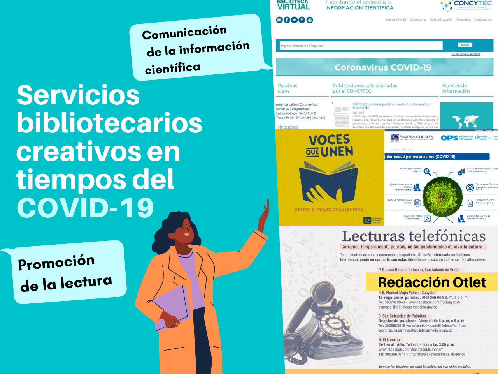

Biblioteca Digital cuenta con una amplia colección de libros electrónicos en español en áreas como
Administración, Ciencia y Tecnología, Computación, Educación, Escolar y Bachillerato, Interés General,
entre otros. Nuestra plataforma está configurada sobre el ecosistema iPublishCentral, un modelo en
constante actualización y mejora cuya infraestructura se implementa de forma rápida y a la medida de
cada biblioteca. Ofrecemos modelos de licenciamiento de libros electrónicos de acuerdo a las necesidades
y requerimientos de cada Biblioteca.

{{titulo5}}
1. Interfaz sencilla, amigable, incluye buscador por título.
2. Instituciones con múltiples campus.
3. Imagen personalizada.
4. Lectura online y por descarga.
5. Personalización de categorías.
6. No requiere equipos especiales.
1. Consulta de los usuarios las 24 horas de los 365 días del año.
2. Cobertura de todos sus usuarios.
3. Chat en vivo para apoyo de sus usuarios.
4. Herramientas que facilitan la lectura.
5 Reportes de usabilidad al instante.
6. Perfil para Bibliotecario para realizar consultas.
1. Asesoría y Capacitación por parte de soporte técnico.
2. Los libros no se maltratan o pierden
3. Importantes ahorros de espacios físicos.
4. Elija los títulos que necesite.
5. Acceso controlado a los contenidos.
6. Disponible para equipos de escritorio y móviles.